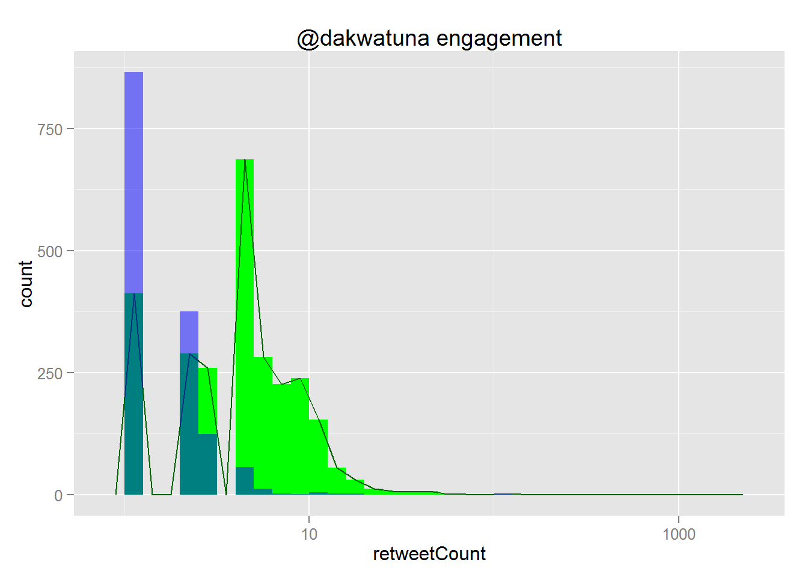

Install Ubuntu package libcurl4-openssl-dev required by RCurl R package:
sudo aptitude install libcurl4-openssl-devInstall the R packages:
install.packages(c('TwitteR', 'httpuv', 'tm', 'wordcloud'))install.packages('ggplot2')Via Twitter API:
tl_dakwatuna <- userTimeline('dakwatuna', n=1000, includeRts = TRUE)
tl_dakwatuna.df <- twListToDF(tl_dakwatuna)
tl_dakwatuna.df$text <- iconv(tl_dakwatuna.df$text, to='utf-8')
write.csv(tl_dakwatuna.df, '~/git/r-tutorials/tl_dakwatuna_2015-04-03.csv')or offline from dataset:
tl_dakwatuna.df <- read.csv('tl_dakwatuna_2015-04-03_tagged.csv', row.names=1)Histogram:
library(ggplot2)
ggplot(tl_dakwatuna.df, aes(x=retweetCount)) + geom_histogram(binwidth=0.1, fill='green') + geom_smooth(stat='bin', binwidth=0.1, colour='darkgreen') + geom_histogram(aes(x=favoriteCount), fill='blue', binwidth=0.1, alpha=0.5) + scale_x_log10() + ggtitle('@dakwatuna engagement')
Scatterplot:
library(ggplot2)
ggplot(tl_dakwatuna.df, aes(x=retweetCount, y=favoriteCount)) + geom_jitter() + scale_x_log10() + scale_y_log10() + ggtitle('@dakwatuna retweets vs favorites')Make the hourOfDay column as factors (if necessary):
df <- tl_dakwatuna.df
#df$hourOfDay = factor(df$hourOfDay)
summary(df$hourOfDay)## Min. 1st Qu. Median Mean 3rd Qu. Max.
## 0.00 10.00 14.00 13.86 18.00 23.00Make a data frame having the counts per group:
library(plyr)
library(ggplot2)
byHourOfDay <-ddply(df, ~hourOfDay, summarise,
tweetCount = length(text),
retweetSum = sum(retweetCount), retweetMean = mean(retweetCount), retweetSd = sd(retweetCount), retweetMax = max(retweetCount),
favoriteSum = sum(favoriteCount), favoriteMean = mean(favoriteCount), favoriteSd = sd(favoriteCount), favoriteMax = max(favoriteCount),
favoriteRatioSum = sum(as.numeric(favoriteRatio)))
#View(byHourOfDay)
engagementScale <- 10
ggplot(byHourOfDay, aes(x=hourOfDay, y=tweetCount, fill=hourOfDay)) +
ylim(0, max(byHourOfDay$tweetCount)) +
geom_bar(stat='identity') +
geom_pointrange(aes(y=engagementScale*retweetMean, ymin=engagementScale*pmax(retweetMean-retweetSd, 0), ymax=engagementScale*(retweetMean+retweetSd), size=favoriteRatioSum), color='green') +
geom_smooth(method='loess', aes(y=engagementScale*retweetMean), fill='green', color='green') +
geom_pointrange(aes(y=engagementScale*favoriteMean, ymin=engagementScale*pmax(favoriteMean-favoriteSd, 0), ymax=engagementScale*(favoriteMean+favoriteSd)), size=1, stat='identity', color='orange') +
geom_smooth(method='loess', aes(y=engagementScale*favoriteMean), fill='orange', color='orange') +
scale_x_continuous(breaks=byHourOfDay$hourOfDay) +
ggtitle('@dakwatuna tweets by hour-of-day')## Warning: Removed 1 rows containing missing values (geom_segment).library(plyr)
library(ggplot2)
byDayOfWeek <-ddply(df, ~dayOfWeek, summarise,
tweetCount = length(text),
retweetSum = sum(retweetCount), retweetMean = mean(retweetCount), retweetSd = sd(retweetCount), retweetMax = max(retweetCount),
favoriteSum = sum(favoriteCount), favoriteMean = mean(favoriteCount), favoriteSd = sd(favoriteCount), favoriteMax = max(favoriteCount),
favoriteRatioSum = sum(as.numeric(favoriteRatio)))
#View(byDayOfWeek)
dayOfWeeks <- c('Sun', 'Mon', 'Tue', 'Wed', 'Thu', 'Fri', 'Sat')
twitterScreenName <- 'dakwatuna'
engagementScale <- 10
ggplot(byDayOfWeek, aes(x=dayOfWeek, y=tweetCount, fill=dayOfWeek)) +
ylim(0, max(byDayOfWeek$tweetCount)) +
geom_bar(stat='identity') +
geom_pointrange(aes(y=engagementScale*retweetMean, ymin=engagementScale*pmax(retweetMean-retweetSd, 0), ymax=engagementScale*(retweetMean+retweetSd), size=favoriteRatioSum), color='green') +
geom_pointrange(aes(y=engagementScale*favoriteMean, ymin=engagementScale*pmax(favoriteMean-favoriteSd, 0), ymax=engagementScale*(favoriteMean+favoriteSd)), size=1, stat='identity', color='orange') +
scale_x_discrete(limits=dayOfWeeks) +
ggtitle(paste('@', twitterScreenName, ' tweets by day-of-week', sep=''))## Warning: Removed 1 rows containing missing values (geom_segment).